APP
2016-2017
UI.UX Designer / APP製作 / 遊戲企劃 / 遊戲動畫 in 三人小組
新一代設計展｜年度最佳設計獎
放肆大賞｜廠商特別獎
生態實驗室
在數位時代中人們努力在社交媒體上極盡可能的展現完美形象。然而，部分使用者發布的動態內容卻引起觀者不舒服的情緒。因此，我們以Facebook用戶為觀察對象，透過訪談以深入地了解觀者最常閱讀的貼文內容型態以及對其產生的情感反饋。最後，我們製作了一款手機遊戲，使人們可以意識到社交媒體上應注意的禮節。
脈絡研究
我們最常見的媒體-Facebook的25-30歲的年輕人為主要的研究對象，針對這樣的族群設計了以下問題：
- ・請問你一天花多久的時間在社群媒體上？
- ・請問你為什麼會使用社群媒體？
- ・什麼類型的貼文會讓你按下"讚"？
- ・什麼樣的文章內容你不喜歡？
- ・什麼樣的文章內容下你會留下留言？
- ・如果你的朋友頻繁的發布貼文，你的感覺是？
- ・當你看到朋友在社群媒體上發布自己的自拍照，你的感覺是？
- ・當你看到朋友在社群媒體上抱怨自己的生活，你的感覺是？
- ・當你看到朋友在社群媒體上炫耀 自己的生活，你的感覺是？ …etc
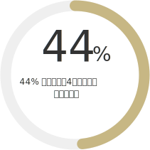
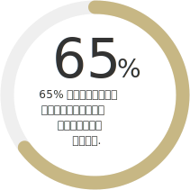
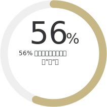
最煩感文章類型
我們將貼文的類型進行分類，並調查受訪者最令人反感的貼文類型。有趣的是，受訪者大多會喜歡觀看網紅或正妹的自拍，但他們對於圖文不符的貼文類型也相當反感，友其對女性受訪者來說，大多受的女性討厭看到其他女人貼出穿著過於暴露的自拍照配上過於女性化的文字。
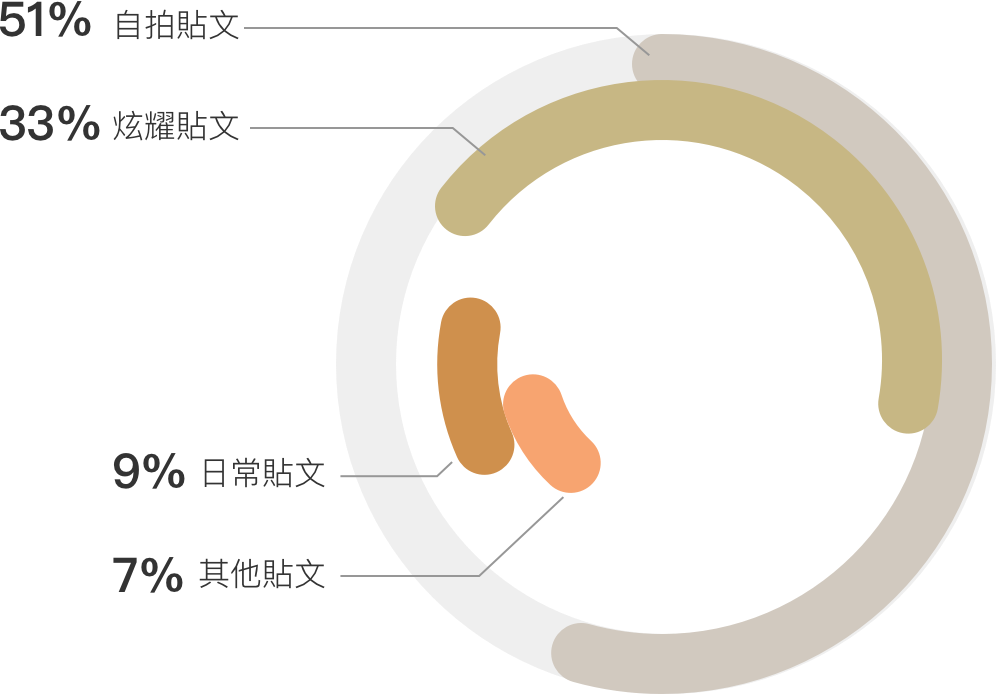
社群媒體生態系
調查結果顯示出三種最令人厭煩的貼文類型：自拍型貼文、自拍型貼文、炫耀型貼文。因此我們將吸血生物的生存模式與社群媒體上的生態相互對比。在這樣的背景故事架構下，幫助人們反思，這樣的社群生態真的是我們所想要的嗎？
角色設計
我們將吸血生物依照其生物特性套用至人們在社群媒體上的行為模式，將這種行為模式製作為三種以吸血蟲為代表的故事。
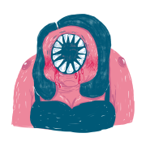
水蛭 VS 自拍貼文
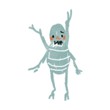
跳蚤 VS 炫耀貼文
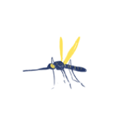
蚊子 VS 日常貼文
Film Story Board
我們將三種不同的吸血生物分別以他們的特性製作的不同的故事內容。首先先以文字進行故事架構的撰寫，再以Film Story Board確認故事畫面。
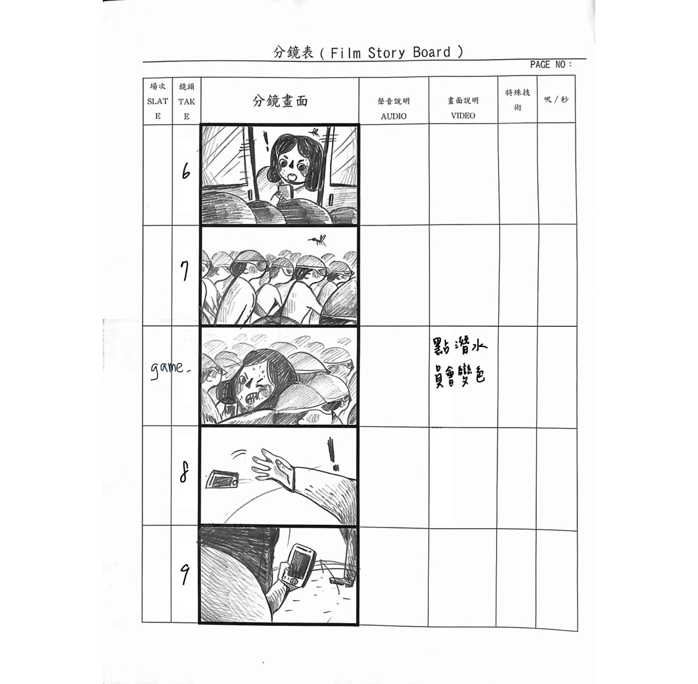
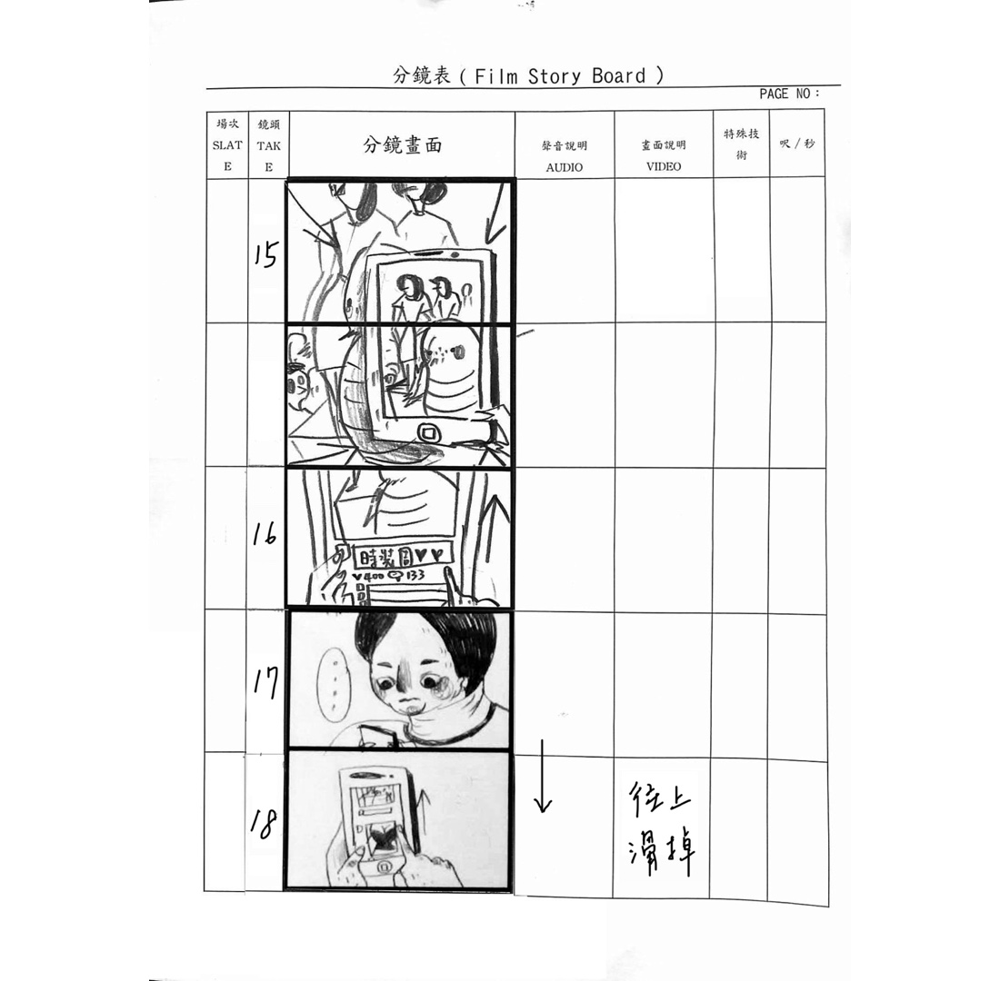
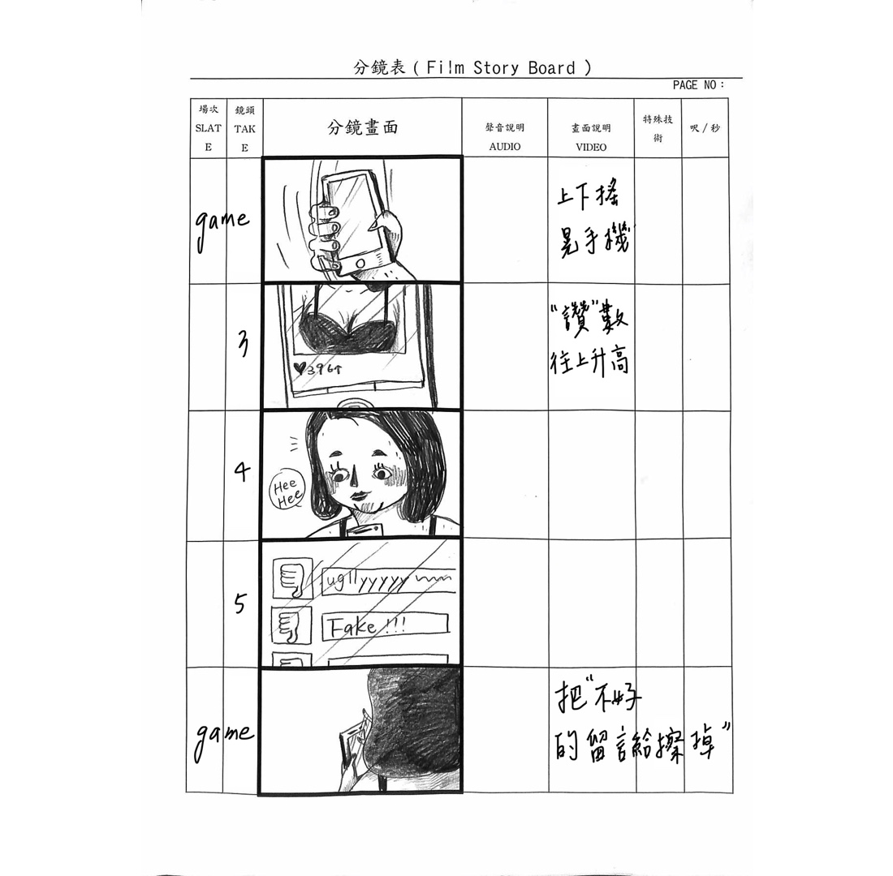
動畫製作
我們將三種不同的吸血生物分別以他們的特性製作的不同的故事內容。首先先以文字進行故事架構的撰寫，再以Film Story Board確認故事畫面。


Functional Map
在製作遊戲之前，我們以functional map的方式探索使用者是與畫面之間互動，並確保每一個故事與遊戲環節都會將使用者引導至下一個正確的頁面。
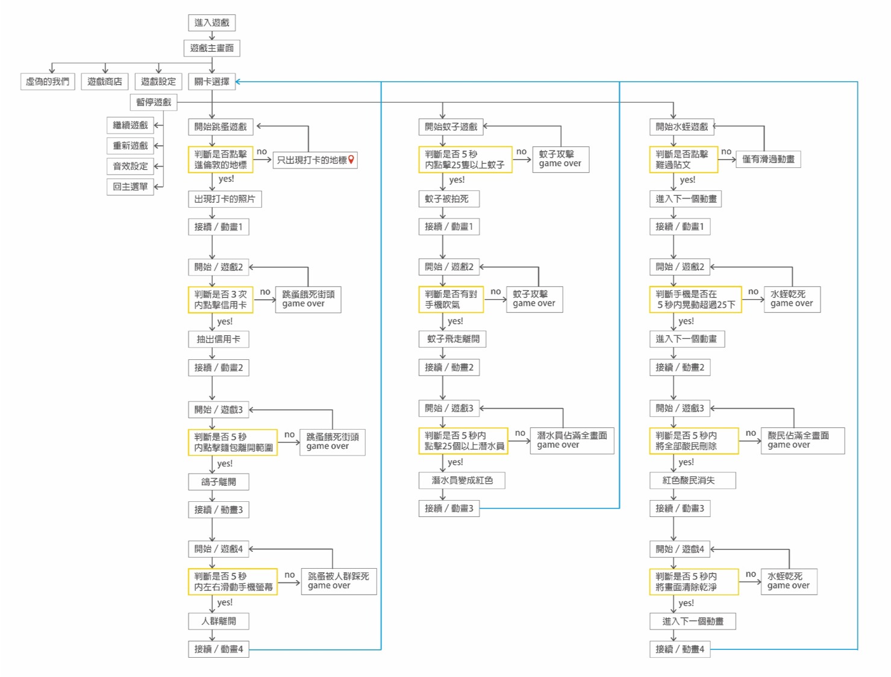
Programming
相比其他軟體，Flash對於APP遊戲製作較不友善，然而，對我來說，Flash有較強的視覺與動畫功能和簡易的編譯系統，讓我可以先進行動畫製作後直接以ActionScript程式語言在影格上製作event的遊戲程式編譯。
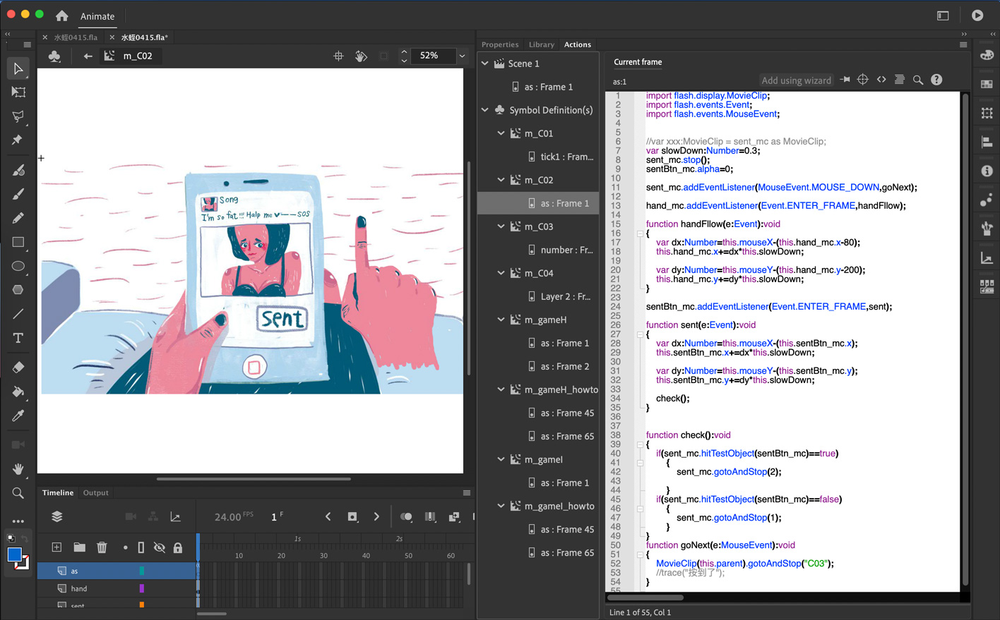
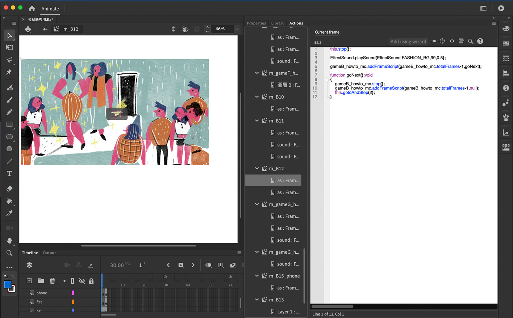
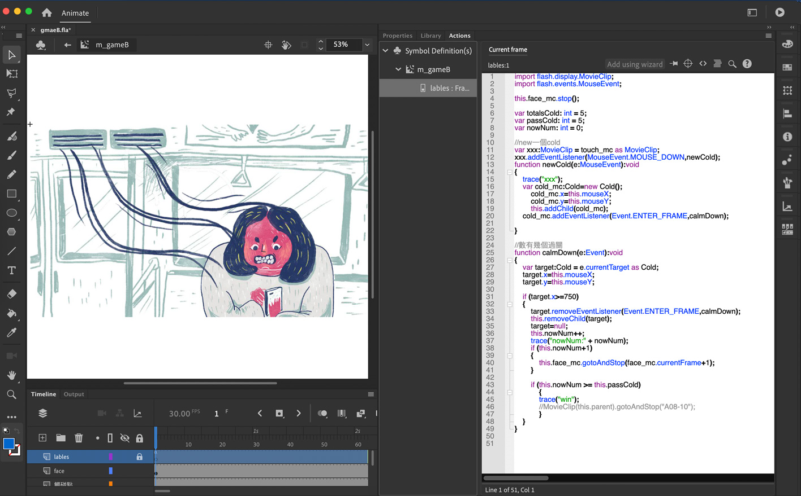
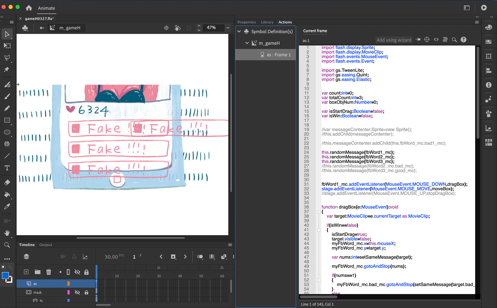
遊戲上線
該遊戲有效地捕捉了用戶的痛點，並引起了用戶的心理共鳴。 這款遊戲幫助觀眾了解社群媒體的複雜生態系統，讓使用者可以通過遊戲故事的形式洞悉社交媒體的信息生態。最後，我們創建了APK文件供大家下載。
評審講評
在這個專案中，我們參與了新一代新秀設計展，並在4,462 件作品中脫穎而出，獲得了年度最佳設計獎，
同時也參與了2016年放肆大賞獲得廠商特別獎。